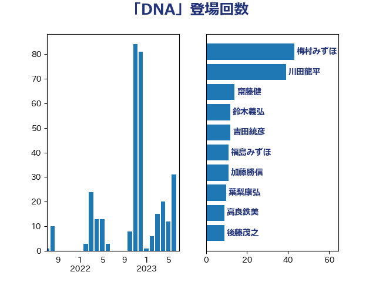

単語「DNA」

| 梅村みずほ | 日本維新の会 | 43 回 |
| 川田龍平 | 立憲民主党 | 39 回 |
| 齋藤健 | 自由民主党 | 14 回 |
| 鈴木義弘 | 国民民主党 | 12 回 |
| 吉田統彦 | 立憲民主党 | 12 回 |
| 福島みずほ | 社会民主党 | 11 回 |
| 加藤勝信 | 自由民主党 | 11 回 |
| 葉梨康弘 | 自由民主党 | 10 回 |
| 高良鉄美 | 無所属 | 9 回 |
| 後藤茂之 | 自由民主党 | 9 回 |
| 石橋通宏 | 立憲民主党 | 7 回 |
| 寺田学 | 立憲民主党 | 6 回 |
| 宮本徹 | 日本共産党 | 6 回 |
| 米山隆一 | 立憲民主党 | 5 回 |
| 鈴木宗男 | 日本維新の会 | 4 回 |
| 西村康稔 | 自由民主党 | 4 回 |
| 牧山ひろえ | 立憲民主党 | 3 回 |
| 沢田良 | 日本維新の会 | 3 回 |
| 倉林明子 | 日本共産党 | 3 回 |
| 鎌田さゆり | 立憲民主党 | 2 回 |
| 舟山康江 | 国民民主党 | 2 回 |
| 福島伸享 | 無所属 | 2 回 |
| 田村憲久 | 自由民主党 | 2 回 |
| 田嶋要 | 立憲民主党 | 2 回 |
| 河野太郎 | 自由民主党 | 2 回 |
| 大口善徳 | 公明党 | 2 回 |
| 勝部賢志 | 立憲民主党 | 2 回 |
| 佐藤英道 | 公明党 | 2 回 |
| 上杉謙太郎 | 自由民主党 | 2 回 |
| 酒井庸行 | 自由民主党 | 1 回 |
| 西野太亮 | 自由民主党 | 1 回 |
| 藤原崇 | 自由民主党 | 1 回 |
| 若松謙維 | 公明党 | 1 回 |
| 田所嘉徳 | 自由民主党 | 1 回 |
| 玄葉光一郎 | 立憲民主党 | 1 回 |
| 松原仁 | 立憲民主党 | 1 回 |
| 本村伸子 | 日本共産党 | 1 回 |
| 新垣邦男 | 立憲民主党 | 1 回 |
| 平林晃 | 公明党 | 1 回 |
| 平木大作 | 公明党 | 1 回 |
| 山田勝彦 | 立憲民主党 | 1 回 |
| 小野泰輔 | 日本維新の会 | 1 回 |
| 奥下剛光 | 日本維新の会 | 1 回 |
| 天畠大輔 | れいわ新選組 | 1 回 |
| 大西健介 | 立憲民主党 | 1 回 |
| 吉田はるみ | 立憲民主党 | 1 回 |
| 仁比聡平 | 日本共産党 | 1 回 |
| 三浦信祐 | 公明党 | 1 回 |